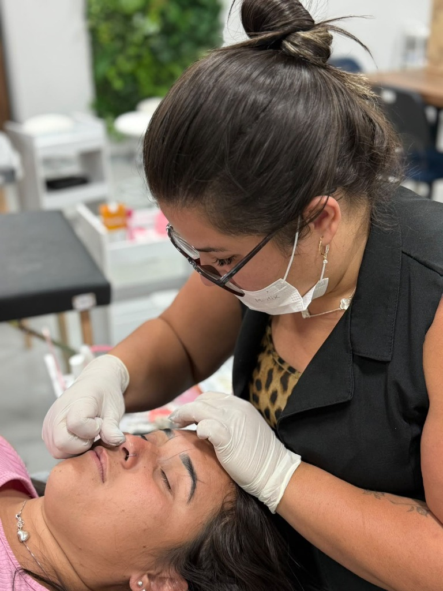
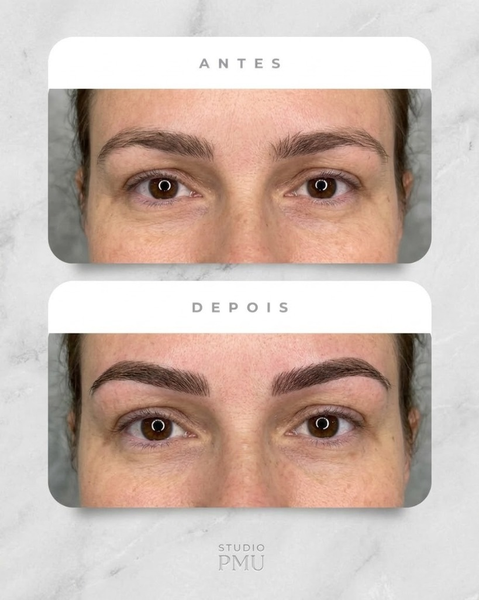
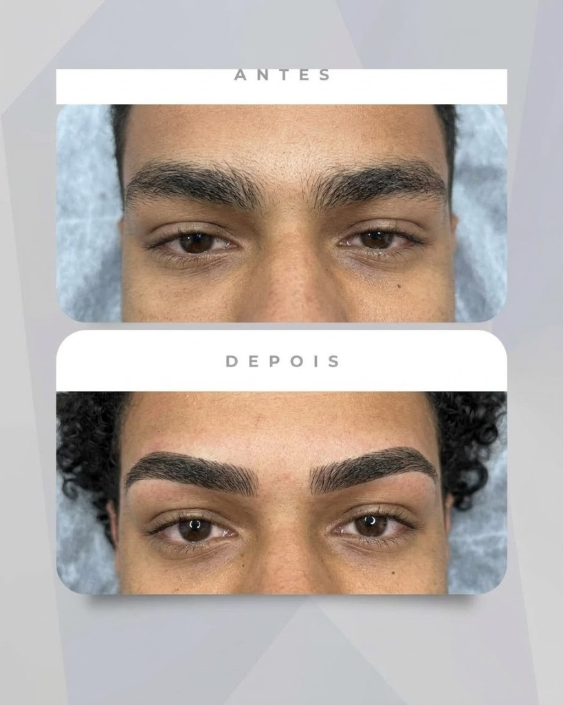

Design de sobrancelhas
Um design personalizado para valorizar seu olhar e respeitar a naturalidade do seu rosto.
Tempo médio: 30 a 40 minutosDesign de sobrancelhas pensado para valorizar o que você já tem de único. Cada rosto é analisado individualmente, respeitando suas características e o que você deseja.

Aqui, você não é apenas mais uma cliente. Você é ouvida, cuidada e acolhida.
Cada atendimento é pensado para que você se sinta tranquila, à vontade, segura e importante enquanto cuida da sua beleza.
Porque cuidar da aparência também pode ser uma forma de cuidar de si.
Não acreditamos em um único formato que funcione para todo mundo. Antes do design, analisamos:
O resultado? Uma sobrancelha pensada para você.
Procedimentos personalizados para valorizar a naturalidade e a expressão do seu olhar.
Arraste a bolinha dourada ou toque nos botões para alternar entre o antes e o depois.
Veja a transformação integral do rosto com o antes e depois lado a lado.


Sempre busquei uma profissão que me permitisse crescer profissionalmente sem deixar de estar presente para minha família.
Foi na área da beleza que encontrei algo que vai muito além de uma profissão: a possibilidade de transformar olhares, elevar a autoestima e fazer alguém se sentir ainda melhor consigo mesma.
Hoje, cada cliente que senta na minha cadeira faz parte dessa história. E eu faço questão de cuidar de cada uma com dedicação, delicadeza e atenção aos detalhes.
Sou extrovertida, amável, detalhista, delicada e, acima de tudo, gosto de ouvir. Porque antes de pensar no desenho ideal para o seu rosto, quero entender o que você deseja.
Minha intenção é que você saia daqui pensando: “Eu me senti cuidada.”
Uma sobrancelha pode mudar a expressão. Um olhar pode mudar a forma como você se enxerga. E quando você se sente bem consigo mesma, isso aparece.
Esse é o propósito da SM Designer.
Hoje, a SM Designer recebe suas clientes em casa, em um atendimento mais próximo e acolhedor. Mas esse é apenas o começo.
Meu sonho é construir um espaço próprio, cada vez mais confortável e acolhedor, onde você não vá apenas cuidar da beleza, mas também desacelerar, respirar e ter um momento para você. Estamos construindo esse sonho, um atendimento de cada vez.
O design de sobrancelhas leva, em média, 30 a 40 minutos, dependendo de cada caso.
Não. A análise faz parte do atendimento. Vamos conversar sobre o que você deseja e encontrar um desenho que harmonize com seu rosto.
O resultado é definido de acordo com suas características e sua preferência. A proposta é encontrar o equilíbrio entre o que valoriza seu rosto e o resultado que você deseja.
Sim. A SM Designer também recebe clientes masculinos com técnicas exclusivas para um visual discreto e natural.
Atualmente, os atendimentos são realizados em casa, em ambiente privativo, acolhedor e com hora marcada em Cristalina – GO.
É simples. Clique em qualquer botão de agendamento e fale diretamente comigo pelo WhatsApp para escolher o melhor dia e horário.
Cuide do seu olhar. Cuide da sua autoestima. Cuide de você.
Agendar pelo WhatsApp